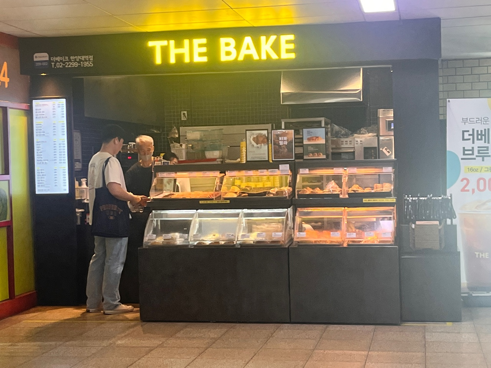
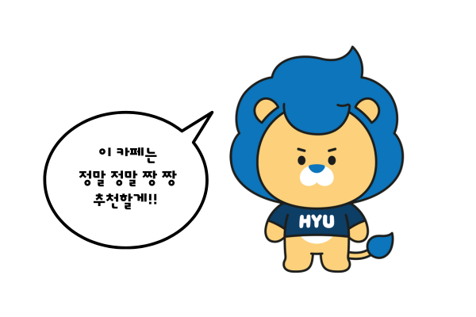

더베이크 한양대역점

________________________________________
연락처: 02-2299-1955
영업 시간: 평일 07:00-19:00 / 주말 및 공휴일 휴무
영업 시간: 평일 07:00-19:00 / 주말 및 공휴일 휴무

팁: - 솔티버터롤은 꼭 먹어봐야 한다.
- 커피 종류가 생각보다 없다. (예를 들어, 아바라가 없다.)
- 앉아 있을 곳이 없다. 무조건 테이크아웃을 해야 한다.
위치:
한양대역사 내 2번 출구 방면(네이버 지도)